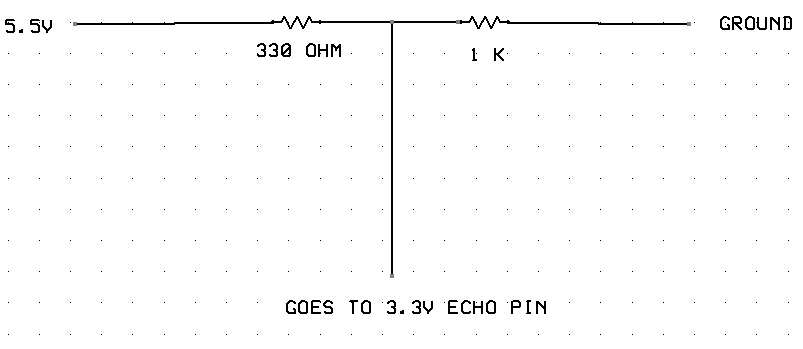
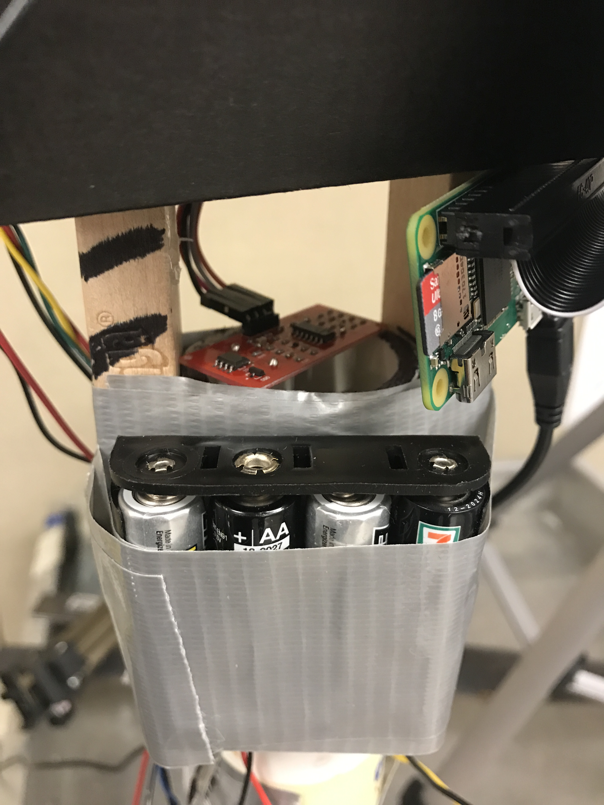
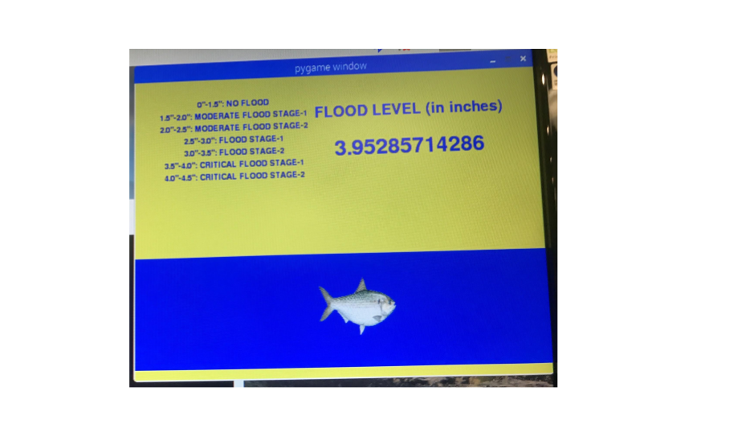
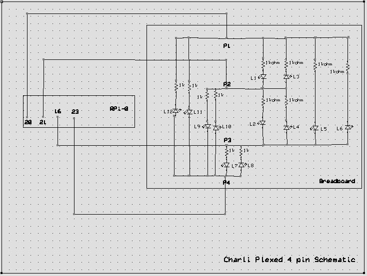
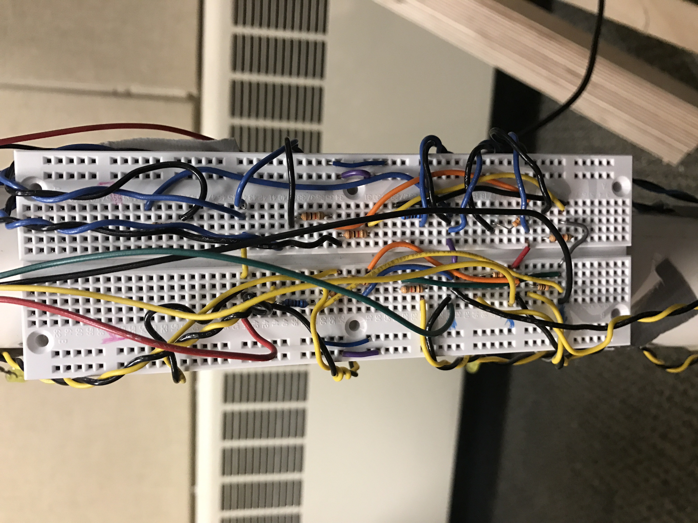

Design and Testing
Design Overview
The system contains Rpi-0 which basically controls the sensor system which composes of an ultrasonic sensor that detects change in water
level. The setup consists of a pipe housing ping pong balls which rise or fall based on the water level and this displacement is detected by the ultrasonic sensor. The prototype river has a height of 4.5" and this entire depth was divided into six ranges. The system also consists of 12 LED's which glow based on the current range of water level. The sensor system is made completely embedded since it is located in the river powered by batteries.
Additionally, there is also a server near the flood wall which is integrated with the sensor system using bluetooth communication. This common server can be utilised to easily integrate multiple sensor systems like fish detection, oxygen level detection etc at a later stage. The water level information collected from the sensor is displayed using animations and graphic from pygames library.
 Figure 1: System 3-D Block Diagram
Figure 1: System 3-D Block Diagram
Further the system is divided into sub-parts. Each of which will be explained in detail below.
1. Design of the sensor system with Raspberry pi-0
2. Design of the Display wall
3. Bluetooth communication between the display wall and the sensor system
4. Design of the LED system
1. Sensor System
This project utilizes a ultrasonic sensor which is integrated into the system to detect the water-level of the river. The HC-SR04 ultrasonic module provides 2cm - 400cm non-contact measurement function with a ranging accuracy of about 3mm. The module includes ultrasonic transmitter, receiver and a control circuit. The sensor is activated by sending a 10 μs pulse from theRPi0 module. The ultrasonic sensor gives back an echo response when it detects an obstacle within the specified distance by the user.
We have built a voltage divider circuit for the ultrasonic sensor to reduce the 5 voltage echo pulses to 3.V, as the echo pulse is captured by the R-pi pin which is set as a Input pin. We have designed the voltage divider with 330 ohm and 1K ohm resistors as shown in the figure-2
Figure-2: Voltage Divider Schematic
As shown in the figure-3, the sensor was placed on top of the pipe assembly. The object used to detect the water-level were ping-pong balls since they were uniform, light-weight and fit perfectly into the pipe assembly.
Figure-3: Ultrasonic Sensor Mounted on top of the pipe
Callback mechanism:
The reading of the sensor values was done using callback mechanism on one of the RPi GPIO pins. The pin connected to the ECHO port of the sensor was registered to a callback function using the following command:
gp.add_event_detect(pin_quit, gp.BOTH, callback=gp18_cb, bouncetime=300)
One important observation to make here is the event detection type is ‘BOTH’. This was important because when the trigger is sent and received to the sensor, the voltage level of the echo pin would change from HIGH to LOW and we need to track both the events. The time duration between the two events is proportional to the distance of the object from which the beam is reflected. When a HIGH event is detected, it indicates the start of sending the trigger beam. When a LOW is detected, it indicates the receive of trigger beam. The difference of the two time values is proportional to the distance and is recorded by the client and is sent to the base station via bluetooth.
2. Display Wall
The flood wall display was prototyped using PyGame python library. Pygame is a library of python modules made for designing video games which includes computer graphics and sound libraries suitable to be used with the python programming language. It is essentially built over the Simple DirectMedia Layer (SDL) library that allows building real time computer games without the need of low level mechanics of the C programming language and its derivates. It also includes built in functions pertaining to vector math, camera, collision detection. Pixel array manipulation and filtering and many others. Basically, it makes writing games and other graphic intensive programs very easy.
The display tasks which were done as part of lab exercises helped significantly to implement the flood wall quickly. The flood wall consists of following main components (as shown in attached figure-4
Water level: The water level was indicated in blue, which went up or down according to the increase or decrease of the water level
Flood stage menu: On the left-top side of the display, there is a menu which indicates the current stage based on the water-level. There are seven stages divided from 0.5 inches to 4.5 inches, and were named as
0 to 1.5 inches → No Flood
1.5 to 2.0 inches → Moderate flood stage-1
2.0 to 2.5 inches → Moderate flood stage-2
2.5 to 3.0 inches → Flood stage-1
3.0 to 3.5 inches → Flood stage-2
3.5 to 4.0 inches → Critical flood stage-1
4.0 to 4.5 inches → Critical flood stage-1
Current level: The top-right side of the display indicates the current water-level in inches whose range is from 0.5 inches to 4.5 inches
Note: The fish being displayed is American Shad species has a cultural history of the people living in the Susquehanna River basin through three centuries. the American shad population in the river was almost destroyed in the mid-nineteenth century by the construction of dams. However, concerned citizens began rebuilding the shad population in 1950, and the continuing conservation efforts are proving successful in bringing the American shad back to the Susquehanna. This account of the rise, fall, and restoration of the shad population in the Susquehanna and its tributaries is a fascinating story of history, politics, technology, economics, sports, and environmentalism. It is also an inspiring tale of how human beings, once recognizing the damage they have done to the natural environment, can work to overcome the despoliation they have caused.
Figure-4: Display near the flood wall
3.Bluetooth Communication
The communication between the client (Raspberry Pi 0) and the base station (Raspberry Pi 3) was established using bluetooth. Bluetooth was chosen as the communication mechanism for the prototype implementation since it is more reliable. For the practical application, RF communication could have been used which has a higher distance range and bandwidth. The protocol used was RFCOMM, which is very much similar to TCP. The reason of using RFCOMM was simple: it is one of the most widely used protocol and its APIs are supported in most of the operating systems.
1.1 Installation and Setup: Following python libraries were installed
sudo apt-get update
sudo apt-get dist-upgrade
sudo apt-get install bluetooth
sudo apt-get install bluez
sudo apt-get install python-bluez
Once installed, bluetooth can be activated by executing following linux commands
sudo bluetoothctl
agent on
default-agent
scan on
1.2 Communication:
Once above commands are executed on both the RPis, we are ready to establish the communication. The connection mechanism is similar to TCP mechanism i.e. it is done by socket programming. As shown in the diagram, following commands were used in the sequence
Server and client both create a bluetooth socket using the command:
bluetooth.BluetoothSocket(bluetooth.RFCOMM)
Server creates a welcoming socket on a specific port and address using the command:
server_socket.bind((server_addr, server_port))
Server starts listening to a specific number of client connections:
server_socket.listen(1)
Server starts waiting for a client connection, which is a blocking call:
server_socket.accept()
Client sends a connection request by mentioning the MAC address of the server:
client_socket.connect(server’s mac addr, port number)
Server accepts the connection request from the client and starts receiving the message in a loop:
server_socket.recv(100)
Client keeps on sending the messages:
client_socket.send(100)
Once client finishes, it closes the connection:
client_socket.close()
Server receives a blank message, which is the indication of the client closure and closes the connection:
server_socket.close()
 Figure-5: Bluetooth: Server-Client Block Diagram
Figure-5: Bluetooth: Server-Client Block Diagram
4.Responsive LED System
In this project we needed a way to get mulyiple LED's working from relatively low number of R-pi pins. Prof Skovira suggested us to use charliplexing technique to achieve the above goal.
Charlieplexing is a technique for driving a multiplexed display in which relatively few I/O pins on a microcontroller are used e.g. to drive an array of LEDs.
The method uses the tri-state logic capabilities of microcontrollers in order to gain efficiency over traditional multiplexing. Although it is more efficient in its use of I/O, there are issues that cause it to be more complicated to design and render it impractical for larger displays.
For this project we needed 12 LED's , essentially 2 for each flood range which would corresondingly glow when the water level reaches that particular range as shown in the figure-6 below. Using charlieplexing we got 12 LED's working from 4 R-pi pins. The schematic and description for the circuit is shown below:
 Figure-6: LED Glowing Pattern
Figure-6: LED Glowing Pattern
This can be achieved by utilizing the tri-state logic properties of microcontroller pins. Microcontroller pins generally have three states: "high" (5 V), "low" (0 V)and "input". Input mode puts the pin into a high-impedance state, which, electrically speaking, "disconnects" that pin from the circuit, meaning little or no current will flow through it. This allows the circuit to see any number of pins connected at any time, simply by changing the state of the pin. In order to drive the twelve-LED matrix above, the two pins corresponding to the LED to be lit are connected to 5 V (I/O pin "high" = binary number 1) and 0 V (I/O pin "low" = binary 0), while the third and fourth pins are set in their input state.
In doing so, current leakage out of the third and fourth pins is prevented, ensuring that the LED wished to be lit is the only one lit. Because the desired LED reduces the voltage available after the resistor, current will not flow across alternate paths (an alternate 2-LED path exists for every pair of pins in the 3-pin diagram, for example), so long as the voltage drop in the desired LED path is less than the total voltage drop across each string of alternative LEDs. In this circuit implementation 1kohm resistors were used.
By using tri-state logic, the matrix can theoretically be expanded to any size, as long as pins are available. For n pins, n(n − 1) LEDs can be in the matrix. Any LED can be lit by applying 5 V and 0 V to its corresponding pins and setting all of the other pins connected to the matrix to input mode.
Figure-7: Schematic of 4 pin Charlieplexing Circuit
Figure-8: Practical Implementation on Breadboard
Video: Demonstration of the Project